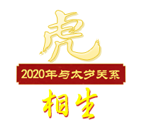
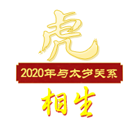

虎年出生的年份：1950年、1962年、1974年、1986年、1998年、2010年
2020年运势吉运
2020年庚子年，子水为生肖虎的“正印”星为其吉星并且得岁干庚金“偏官”去相生，构成了官印相生。2020年的生肖鼠在事业上多容易获得一些机遇，利于考试考核，利于职称提升，工作变动和调整等，利于福利待遇的提升，容易得到政策的倾斜和照顾。但以上吉利虽多，需要打一个折扣，因为生肖虎没法和太岁直接作用，故机遇不少，抓住不多。
2020年运势凶运
2020庚子年太岁为生肖虎的“白虎煞”为凶星，且还带了“吊客”，“天狗关”，“丧门”等凶星。故属虎人的小朋友就得注意，2020年不适合经常去找猫狗打闹，否则容易有抓伤，咬伤。其次2020太岁带的凶星也有家中老人或是亲友离开的信号，或是带了一些血光之灾的凶险，也不太利于婚姻运，容易犯孤独。
2020年财运运势
财运方面为吉利，2020年太岁子水为其“正印”星，和岁干构成了官印相生，利于物质运，利于待遇提升，容易在金融项目，五金类的项目或是水利项目，餐饮项目上获得收益，但前提都需要多去争取。属虎人不妨在家中或办公室摆放面向自己的【祥安阁八方运财】风水摆件来进行增旺财运，避免因为太岁带了凶煞而带来的是非破财；同时佩戴【祥安阁八方运财】坠链使用效果更佳。
2020年事业官运
生肖虎事业官运方面，因生肖虎为寅木，而太岁子水“正印”星两者构成了官印相生，利升职运，利于考试考核，利于应聘求职，利于工作变动和调整。但生肖虎无法和太岁直接拉动，难以很好的去化太岁的吉利气场，所以机遇多，但不好把握。不妨摆放一件【祥安阁凤仪荣归】摆件来减少小人所带来的烦恼，避免不利于竞争，学习的学业有成，工作的如鱼得水，贵人助你事业蒸蒸日上，名利双收。
2020年感情运势
生肖虎的人今年“偏官”星为岁干，为生肖虎女生的异性星，而男生异性星没出现。说明2020年属虎的女生感情上还会有一些机遇，但也需要自身多去争取，而男生的话感情上多被动，难有好的机遇。建议生肖虎女生建议催动一下自身的桃花运，无论是单身还是有伴侣的属虎男女，2020年可随身佩戴或者在床头放一条【祥安阁属虎转运手链】，本命佛守护、五行互相联系转运、六合好比夫妻之亲乃感情婚姻的吉祥饰品，寓意今年感情和合顺遂；单身人士寓意提升自信，增添魅力，期盼早日遇到良缘；而有对象的属虎人则寓意感情的和睦稳固，与伴侣恩爱如初，且避免第三者破坏感情。
2020年健康平安运势
生肖虎健康方面2020年根据太岁五行组合来看，到是不惧怕。但太岁带了诸多凶煞，我们就必须得去防范，需要防范各种损伤，不宜去一些阴暗潮湿的环境去冒险，还有呼吸系统可能不太理想。不妨佩戴一件【祥安阁三会带运】吊坠做护身符，以保鼠年身心平安，化去生肖虎2020年有机遇难把握的缺点，并容易遇到贵人和增旺物质运！
对于开车的属虎人来说，2020年诸多凶星容易引导出血光之灾，故开车不宜太快，必须得开安全车，不宜酒后驾驶，不宜疲劳驾驶。不妨在车上悬挂【祥安阁财来运转】车挂作为爱车的吉祥物，避免外出撞煞，化去随行路上的凶煞，为自己迎取吉祥的瑞气。
2020年吉祥物
鼠年属虎和太岁为气势相生，得太岁之生，但力量较小。虽然太岁的组合导致了很多吉利的信号，但属虎人却是机遇很多，而难以很好的去把握，虽然也会有一些凶星干扰，但也是干扰不大。小心太岁凶煞丧门，吊客，白虎煞等所带来的一些灾害。属虎人可以佩戴【祥安阁三会带运】黑曜石吊坠作为2020年护身符，以保鼠年平安，此坠由猪鼠牛三者相会而构成，环绕象征幸运转动，相会平和的太极图案相似；寓意属虎人庚子年家业定转乾坤，事业驾轻就熟，财富栖身，富甲如意。亦可带一串【祥安阁属虎转运手链】，寓意2020全年感情和合顺遂，福运亨通。